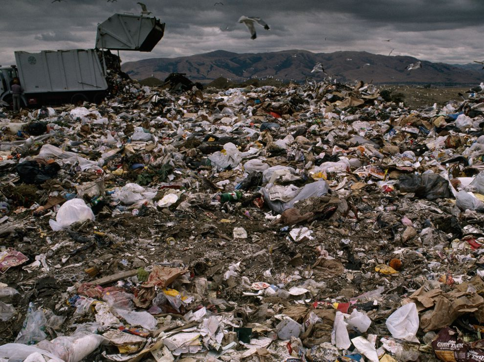

POLLUTION

Pollution is the introduction of harmful materials into the environment. These harmful materials are called pollutants . Pollutants can be natural, such as volcanic ash. They can also be created by human activity, such as trash or runoff produced by factories. Pollutants damage the quality of air, water, and land.
Many things that are useful to people produce pollution. Cars spew pollutants from their exhaust pipes. Burning coal to create electricity pollutes the air. Industries and homes generate garbage and sewage that can pollute the land and water. Pesticides—chemical poisons used to kill weeds and insects—seep into waterways and harm wildlife.
All living things—from one-celled microbes to blue whales—depend on Earth's supply of air and water. When these resources are polluted, all forms of life are threatened.
Pollution is a global problem. Although urban areas are usually more polluted than the countryside, pollution can spread to remote places where no people live. For example, pesticides and other chemicals have been found in the Antarctic ice sheet. In the middle of the northern Pacific Ocean, a huge collection of microscopic plastic particles forms what is known as the Great Pacific Garbage Patch.
Air and water currents carry pollution. Ocean currents and migrating fish carry marine pollutants far and wide. Winds can pick up radioactive material accidentally released from a nuclear reactor and scatter it around the world. Smoke from a factory in one country drifts into another country.
In the past, visitors to Big Bend National Park in the U.S. state of Texas could see 290 kilometers (180 miles) across the vast landscape. Now, coal-burning power plants in Texas and the neighboring state of Chihuahua, Mexico have spewed so much pollution into the air that visitors to Big Bend can sometimes see only 50 kilometers (30 miles).